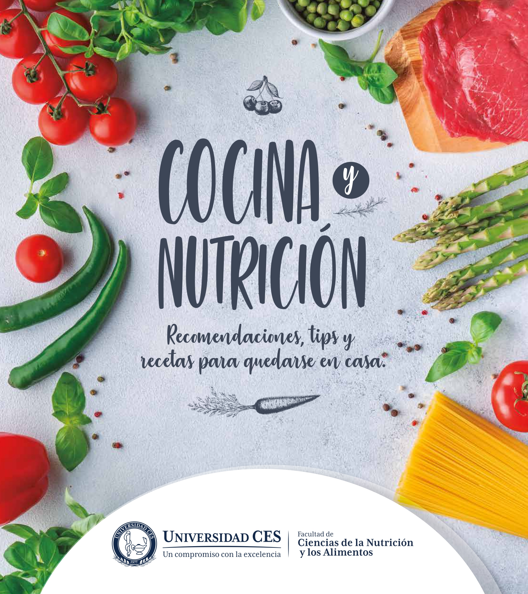

RECETAS DE COCINA
Inicio
Media
Servicios
Informacion
Búsqueda en google:
Inicio
Tecnicas
Arroz Con Huevo Cremoso
Tortilla De Papitas Criollas
Sandwich Tostado de Huevo,Quesito y Aguacate
Torticas de Calentao
Ceviche de Frijoles Rojos
Sopita De Arroz y Frijol Cabecita Negra
Albondigas de Lentejas y Cilantro en Salsa de Tomate
Pico De Gallo con Garbanzos,Mango y Aguacate
Arroz,Maicito y Arvejas con Vegetales Encurtidos
Ensalada Tipo Alemana
Salpicon de Atun y Yucas
Molde Cerdo Guisado y Platano
Tamal en Olla
Arroz Cremoso de Pollo Aguacate y Maduritos
Helado Rapido de Banano y Panela
Dulce de Tomate de Arbol y Cola
Enyucado en Sarten
